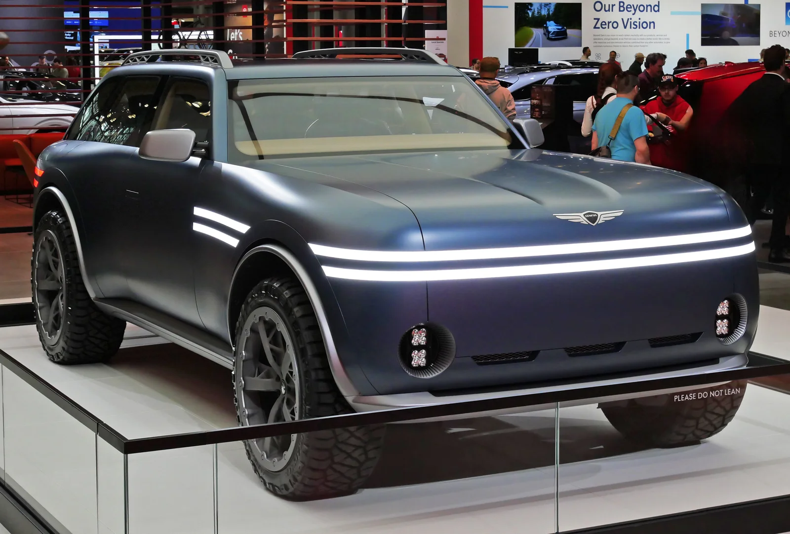

▲ 제네시스는 미국에서 단독 전시장 체제로 전환해 왔다 ⓒ Genesis
제네시스가 미국 캘리포니아 샌브루노에 전용 전시장을 열었습니다. '제네시스 오브 샌브루노', 미국 85번째입니다.
2022년 루이지애나 라파예트에 첫 단독 전시장을 연 이후의 결과입니다.
숫자보다 중요한 건 "전용"이라는 단어입니다.
1. "전용 전시장"이라는 말의 무게
제네시스는 미국에서 현대차 딜러 매장 안의 한 구역으로 출발했습니다. 같은 건물에서 아반떼와 G80을 함께 파는 구조였습니다.
| 구분 | 딜러 매장 내 코너 | 전용 전시장 |
|---|---|---|
| 공간 | 공유 | 독립 |
| 판매 인력 | 대중 브랜드와 겸직 | 전담 |
| 고객 경험 | 대중 브랜드와 동일 | 브랜드 고유 |
| 초기 비용 | 낮다 | 높다 |
| 브랜드 인식 | "현대의 고급 라인" | 독립 럭셔리 브랜드 |
마지막 항목이 이 투자의 목적입니다. 럭셔리 브랜드에서 매장 경험은 제품의 일부로 취급됩니다. 벤츠나 BMW를 사러 간 사람이 옆 창구에서 소형 해치백 상담이 진행되는 것을 보는 상황을, 럭셔리 브랜드는 피하려 합니다.
2. 4년에 85개
| 시점 | 내용 |
|---|---|
| 2022년 | 루이지애나주 라파예트 — 첫 단독 전시장 |
| 2026년 8월 | 캘리포니아주 샌브루노 — 85번째 |
4년 남짓에 85개면 연평균 20개 이상입니다. 전시장 하나를 세우는 데는 부지 확보, 인허가, 건축, 인력 채용이 필요합니다. 이 속도는 브랜드 본사만의 의지로는 나오지 않습니다.
미국 자동차 유통은 딜러 소유 구조입니다. 제조사가 직접 매장을 여는 것이 법으로 제한되는 주가 많습니다. 즉 85개라는 숫자는 딜러들이 자기 돈을 들여 제네시스 전용 건물을 지었다는 뜻입니다.
딜러가 투자를 결정하려면 회수 가능성이 보여야 합니다. 제네시스의 미국 판매가 2025년 8만2,331대로 처음 8만 대를 넘고, 7월까지 22개월 연속 전년 대비 증가한 흐름이 이 판단의 근거가 됩니다.

▲ GV70과 GV80의 판매 실적이 딜러의 전시장 투자 판단 근거가 된다
3. 왜 샌브루노인가
샌브루노는 샌프란시스코 남쪽, 실리콘밸리로 이어지는 길목에 있습니다. 샌프란시스코 국제공항과 인접한 지역입니다.
| 요인 | 내용 |
|---|---|
| 구매력 | 미국에서 가구 소득 수준이 가장 높은 권역 중 하나 |
| 기술 수용도 | 전동화·소프트웨어 기능에 대한 거부감이 낮다 |
| 전기차 보급 | 캘리포니아는 미국 전기차 판매의 최대 시장 |
| 경쟁 밀도 | 테슬라·루시드·리비안의 본거지이기도 하다 |
네 번째 항목은 양면적입니다. 전동화에 익숙한 소비자가 많다는 것은 기회이면서, 가장 까다로운 시장이라는 뜻이기도 합니다. 이 지역에서 통하면 다른 곳에서도 통한다는 판단이 깔려 있습니다.
GV90의 월드 프리미어가 샌프란시스코에서 열린 것과도 이어집니다. 브랜드 상단 모델의 공개와 지역 거점 확충이 같은 시기에 진행됐습니다.
4. 발표되지 않은 것
| 항목 | 상태 |
|---|---|
| 전시장 면적 | 미공개 |
| 투자 규모 | 미공개 |
| 시설 구성 세부 | 미공개 |
| 향후 확장 목표 수치 | 미공개 |
보도는 마케팅과 문화 사업 중심으로 구성돼 있습니다. 건물 규모나 투자액 같은 인프라 수치는 포함되지 않았습니다. 확장 속도를 판단하려면 앞으로의 개소 발표를 누적해서 봐야 합니다.

▲ 미국 딜러가 직접 투자해 전용 건물을 세우는 구조다
5. 국내와 비교하면
국내에서 제네시스는 처음부터 별도 전시장 체제로 출발했습니다. 브랜드 출범 시점부터 현대차 지점과 분리된 매장을 운영해 왔습니다.
미국은 사정이 달랐습니다. 유통 구조가 딜러 소유이고, 신규 브랜드가 딜러에게 별도 투자를 요구하기 어렵습니다. 판매 실적이 먼저 나와야 투자 논의가 시작되는 순서입니다.
85개라는 숫자가 의미 있는 이유가 여기 있습니다. 브랜드 전략이 아니라 딜러들의 투자 판단이 누적된 결과이기 때문입니다.

▲ 제네시스는 미국을 글로벌 럭셔리 성장의 핵심 거점으로 설정했다
6. 정리
제네시스가 캘리포니아 샌브루노에 미국 85번째 전용 전시장을 열었습니다. 명칭은 '제네시스 오브 샌브루노'입니다.
2022년 루이지애나 라파예트에 첫 단독 전시장을 연 이후 4년 남짓에 85개가 됐습니다. 미국 유통 구조상 이는 딜러들이 직접 투자해 전용 건물을 세웠다는 뜻입니다.
샌브루노는 실리콘밸리 인접 지역으로, 구매력과 기술 수용도가 배치 근거로 제시됐습니다. 면적과 투자 규모 등 구체적 수치는 발표되지 않았습니다.